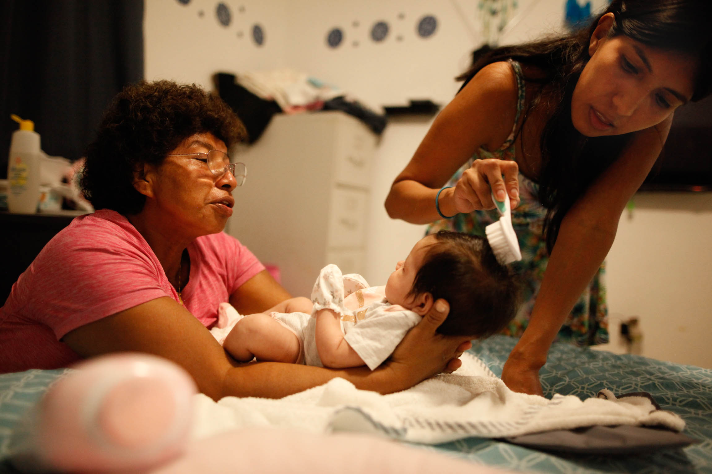
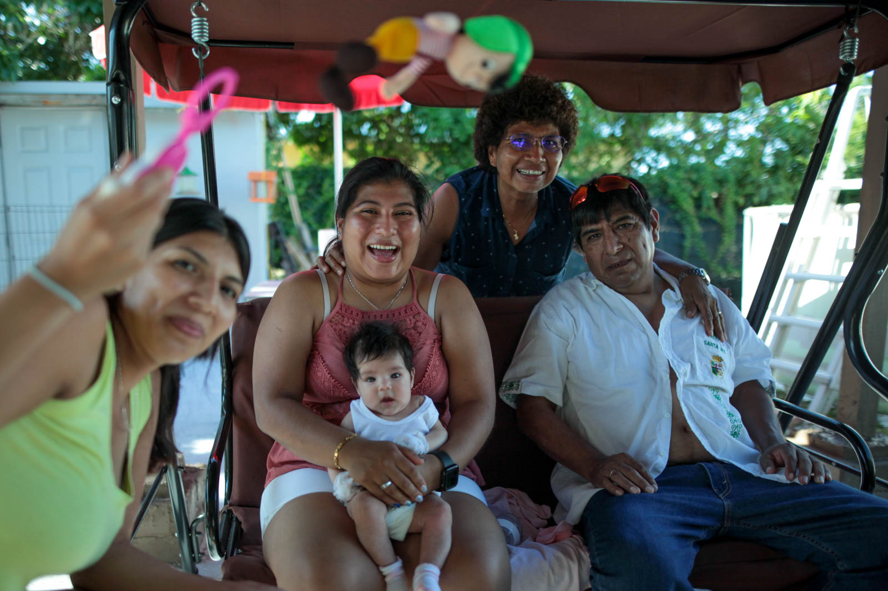

Newborn
For a family that grew up apart from eachother, due to the whims of some people, being together like it is in these photos feels like an act of protest. It feels like an amending to the wounds and offenses of the past. There is no way of recovering all the time we lost, yet I don't mind that anymore because of the simple presence of a newborn that makes us feel closer than we ever had.



